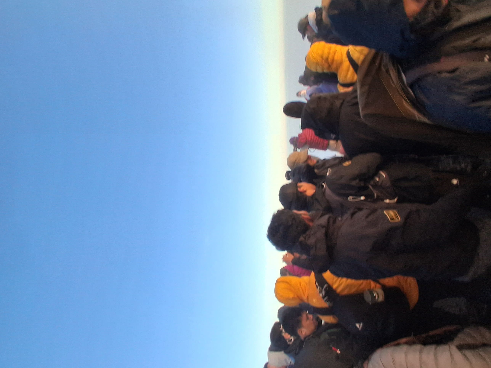

Package Overview
Want the postcard views without an extreme midnight summit climb?
The 2 Days 1 Night Senaru Crater Rim package is the premier choice for beginner hikers, families, and nature photographers. It traverses shaded tropical rainforests, ending with one of the most stunning sunset panoramas across Segara Anak Lake and Mount Agung in Bali.
With our Licensed Guide and Porters setting up camp and preparing 3 fresh daily meals, all you need to do is walk and soak in the majestic landscape.
- Start Point: Senaru Village (601m)
- Finish Point: Senaru Village (601m)
- Max Altitude: 2,641m (Senaru Crater Rim)
- Level: Moderate / Beginner Friendly
Detailed Itinerary
Day 1 Senaru Village – Senaru Crater Rim (2,641m)
Highlight: Shaded tropical rainforest & breathtaking crater rim sunset.
- 07:30 AM: Registration at Senaru Trek Center (RTC - 601m).
- 08:00 AM – 12:00 PM: Hike through the tropical rainforest with chances to see black lutung monkeys. Rest at Pos 1 and Pos 2; hot lunch at Pos Extra / Pos 3.
- 13:00 – 16:30 PM: Climb beyond the tree line to Senaru Crater Rim (Camp - 2,641m).
- 17:00 – 18:30 PM: Enjoy one of the finest sunsets on earth overlooking Segara Anak Lake, Mt. Baru Jari, and Bali's Mt. Agung.
- 19:00 PM: Warm dinner under star-filled skies and overnight camp.
- Meals: Lunch, Dinner.
Day 2 Senaru Crater Rim – Rainforest – Senaru Village
Highlight: Golden rim sunrise & gentle jungle descent.
- 06:30 AM: Enjoy a hot breakfast and coffee while the sunrise lights up the caldera.
- 08:00 AM – 12:30 PM: Descend back through the lush tropical rainforest trail. Lunch provided at Pos 1 or Pos 2.
- 13:30 PM: Arrive at Senaru Gate and head to Tranom Trekking office.
- 14:00 PM: Collect your stored luggage and take private transport to your next stop (Senggigi/Airport/Bangsal Port).
- Meals: Breakfast, Lunch.
What is Included?
- Licensed English-speaking mountain guide & local porters.
- Tent, thick mattress, sleeping bag, pillow & private toilet tent.
- Nutritious hot meals, fresh tropical fruits, hot drinks & mineral water.
- Rinjani National Park entry tickets & tracking insurance.
- Round-trip private air-conditioned transport anywhere in Lombok.
- 1-night accommodation in Senaru before the trek.
What is Excluded?
- Personal daypack carrier porter.
- Personal trekking gear (Shoes, warm fleece, trekking poles).
- Tips for guide & porters.